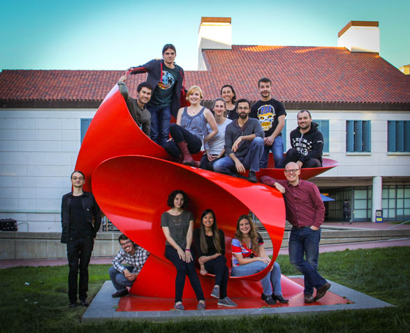

<div>
  <div style="margin: 10px 10px 10px 10px;">
    
  </div>

  <div style="clear: both"></div>
</div>

{% for person in site.data.people %}
<div class="person-header">
  <div class="person-left">{{ person.name }}</div>
  <div class="person-right">{{ person.position }}</div>
  <div style="clear: both"></div>
</div>

<div>
  <div style="margin: 10px 10px 10px 10px; float: left; width: 170px;">
      
  </div>

  <div style="float: right; width: 400px;">
    {{ person.info }}
  </div>

  <div style="clear: both"></div>
</div>

<p></p>
{% endfor %}

<div class="section-header">
Former Ingolia lab Members
</div>

<table style="width:100%">

{% for person in site.data.former %}
<tr>
  <td>{{ person.name }}</td>
  <td>{{ person.position }}</td>
  <td>{{ person.time }}</td>
  <td>{{ person.now }}</td>
</tr>
{% endfor %}

</table>

<div class="section-header">
Interested in joining the Ingolia lab?
</div>

<div>Post-doctoral applicants should email a CV to ingolia at berkeley
dot edu.
</div>

<div>
Graduate students join our lab through
the <a href="http://mcb.berkeley.edu/grad/">MCB program</a>,
the <a href="http://computationalbiology.berkeley.edu/">Computational Biology program</a>,
and the <a href="http://biophysics.berkeley.edu">Biophysics program</a>.
</div>
